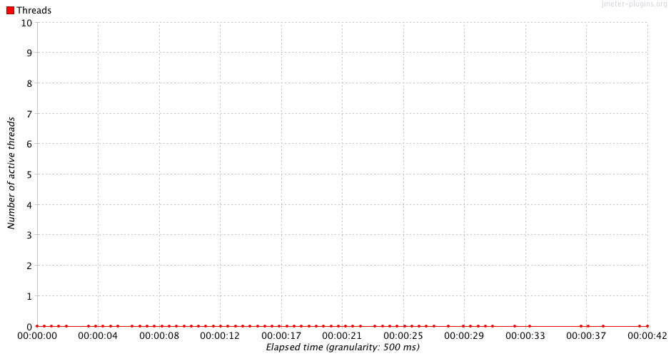
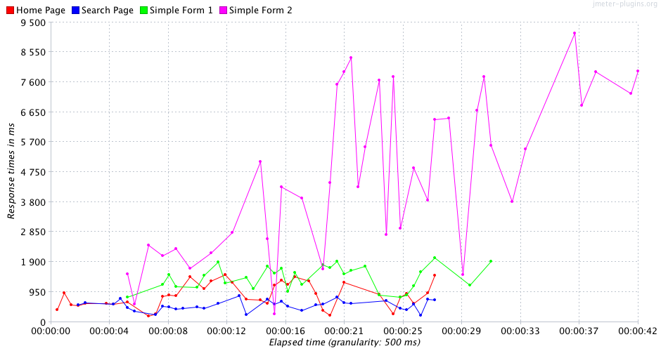
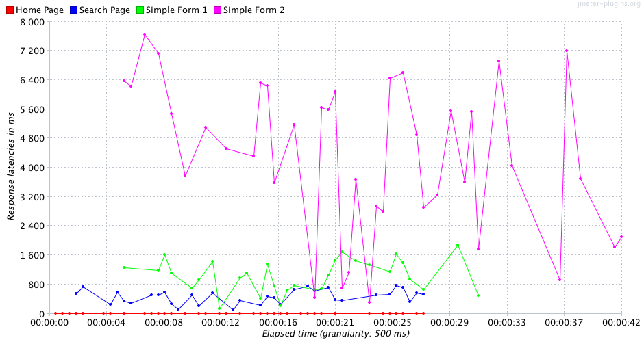
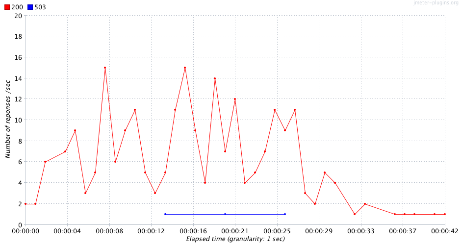

Sample Example – sample nominal
- Executed at 14/07/13, às 20:46
- JMeter log:
sample_nominal_20130714_234638.jtl
Summary
Result Table:
| Page | Requests | AVG | Median | Std Deviation | % Deviation | Minimum | 90% | Maximum | Throughput | % error | % < 500ms | % < 2s | % < 4s | % < 6s | % < 8s |
|---|---|---|---|---|---|---|---|---|---|---|---|---|---|---|---|
| Home Page | 63 | 824 | 893 | 430.15 | 28.81 | 146 | 1426 | 1493 | 2.28 | 0.0 | 31.7 | 99.9 | 99.9 | 99.9 | 99.9 |
| Search Page | 61 | 523 | 489 | 211.94 | 23.04 | 153 | 822 | 920 | 2.32 | 0.0 | 50.8 | 99.9 | 99.9 | 99.9 | 99.9 |
| Simple Form 2 | 60 | 4890 | 4427 | 2602.37 | 28.4 | 255 | 7989 | 9164 | 1.57 | 0.0 | 3.30 | 16.60 | 43.30 | 58.30 | 90.00 |
| Simple Form 1 | 48 | 1376 | 1326 | 447.86 | 21.18 | 570 | 1988 | 2115 | 1.77 | 6.25 | 0.00 | 89.50 | 99.9 | 99.9 | 99.9 |
| TOTAL | 232 | 1911 | 990 | 2244.39 | 24.49 | 146 | 6676 | 9164 | 5.5 | 1.29 | 21.45 | 76.48 | 85.75 | 89.50 | 97.43 |
Thread Distribution (Thread State Over Time)

Response Time

Latency Time

Response types

Response time distribution

Response time percentils

Issues:
| Issue | Label | Item | Expected | Real |
|---|---|---|---|---|
| 1 | Home Page | % Deviation | 25 | 28.81 |
| 2 | Simple Form 2 | Average | 1000 | 4890 |
| 3 | Simple Form 2 | Median | 1000 | 4427 |
| 4 | Simple Form 2 | Std. Deviation | 1000 | 2602.37 |
| 5 | Simple Form 2 | % Deviation | 25 | 28.4 |
| 6 | Simple Form 2 | 90% Line | 2000 | 7989 |
| 7 | Simple Form 2 | Max Time | 2100 | 9164 |
| 8 | Simple Form 2 | Under 0.5s | 30 | 3.3000000000000003 |
| 9 | Simple Form 2 | Under 2s | 90 | 16.6 |
| 10 | Simple Form 2 | Under 4s | 95 | 43.3 |
| 11 | Simple Form 2 | Under 6s | 97 | 58.3 |
| 12 | Simple Form 2 | Under 8s | 99 | 90.0 |
| 13 | Simple Form 1 | Number of samplers | 50 | 48 |
| 14 | Simple Form 1 | Average | 1000 | 1376 |
| 15 | Simple Form 1 | Median | 1000 | 1326 |
| 16 | Simple Form 1 | Min Time | 400 | 570 |
| 17 | Simple Form 1 | Max Time | 2100 | 2115 |
| 18 | Simple Form 1 | % Error | 1 | 6.25 |
| 19 | Simple Form 1 | Under 0.5s | 30 | 0 |
| 20 | Simple Form 1 | Under 2s | 90 | 89.5 |
| 21 | TOTAL | Average | 1000 | 1911 |
| 22 | TOTAL | Std. Deviation | 1000 | 2244.39 |
| 23 | TOTAL | 90% Line | 2000 | 6676 |
| 24 | TOTAL | Max Time | 2100 | 9164 |
| 25 | TOTAL | % Error | 1 | 1.29 |
| 26 | TOTAL | Under 0.5s | 30 | 21.45 |
| 27 | TOTAL | Under 2s | 90 | 76.47500000000001 |
| 28 | TOTAL | Under 4s | 95 | 85.75 |
| 29 | TOTAL | Under 6s | 97 | 89.5 |
| 30 | TOTAL | Under 8s | 99 | 97.42500000000001 |